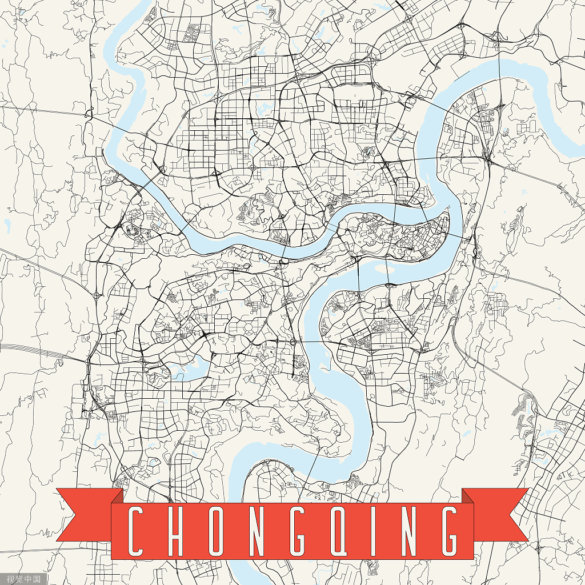
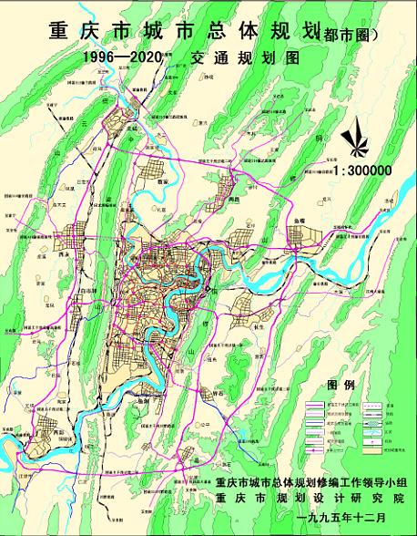
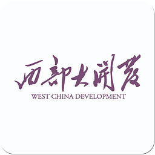
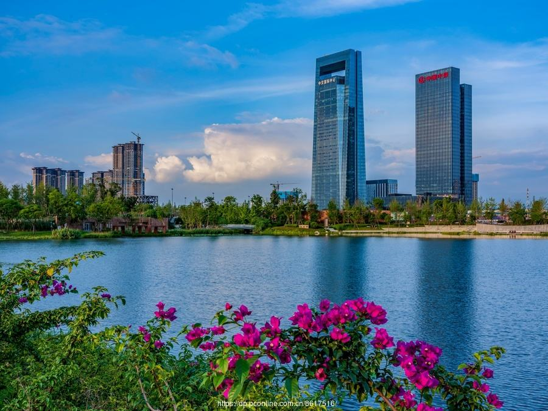
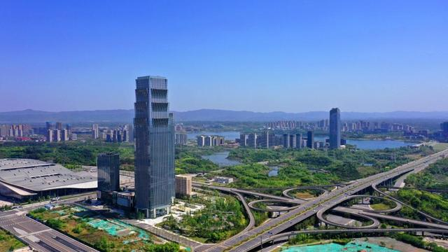
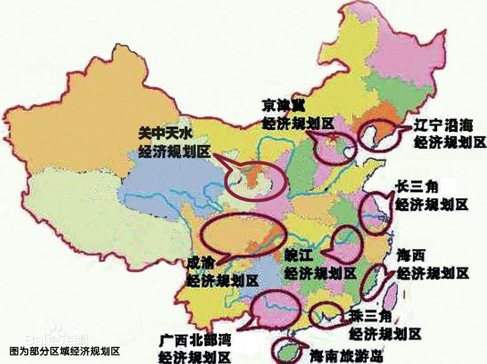
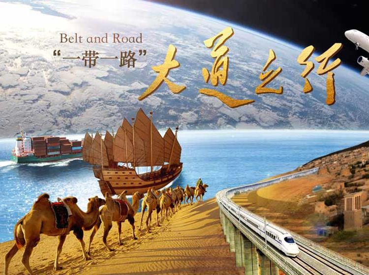
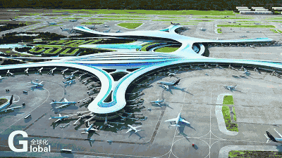

1929
重庆发展历史
【1929-1997】
1997年6月18日重庆直辖市正式挂牌
[1929年]重庆正式建市。
[1937年至1946年]日本向中国发动侵略战争，1937年11月20日，国民 ... 发布《国民 ... 移驻重庆宣言》，12月1日正式在重庆办公，重庆成为中华民国战时首都。
[1940年9月6日]国民 ... 明确规定重庆为中华民国陪都。
重庆是当时全国抗日战争和反法西斯的最高指挥部，世界著名的反法西斯中心，中国大后方的政治、经济、文化中心，故重庆又有“三都之地”之称。
新中国建立初期重庆作为 ... 中央西南局和西南军政 ... 会驻地，是西南地区政治、经济、文化中心，为中央直辖市。
[1952年8月]恢复四川省，重庆仍为直辖市。
[1954年6月]西南大区撤销后重庆改为四川省辖市，同期由直辖市降为省辖市的还有哈尔滨、长春、沈阳、旅大、鞍山、抚顺、本溪、武汉、广州、西安。
[1983年]率先成为全国经济体制综合改革试点城市，成为计划单列市，赋予省级经济管理权限。
[1992年]辟为沿江开放城市。
[1996年9月]中央批准重庆代管万县市（现重庆市万州区）、涪陵市和黔江地区。
[1997年3月14日]经八届全国人大五次会议审议批准，重庆恢复为中央直辖市，于1997年6月18日正式挂牌。
重庆成为继北京、天津、上海之后的中国第四个中央直辖市，也是中国中西部地区唯一的中央直辖市，从此掀开了重庆建设与发展史上崭新的一页。
1978
改革开放
【1978-2018】
重庆成为全国改革开放的排头兵
重庆立即开展了城市整体规划修编总规将重庆市定位为具有“都市定位、省域特征”的直辖市。
1983年2月,党中央、国务院正式批准《关于在重庆进行经济体制综合改革试点意见的报告》,对重庆市实行计划单列，赋予其省级 经济管理权限并辟为外贸口岸。重庆进行经济综合改革试点，对于进一步搞活和开发我国西南的经济，探索军工生产和民用生产 相结合的新路子，以及如何组织好以大城市为中心的经济区，都具有重要意义。从此拉开了中国城市综合体制改革的帷幕。
自此，重庆成为全国改革开放的排头兵，对西南地区和长江上游地区的经济建设和对外开放发挥着越来越重要的作用,重 庆在实践中探索的众多做法和经验被全国不少地方推而广之。
1998
修编城市总规划
【1998】
绘就一幅该市全面建设小康社会、面向 21世纪的发展蓝图。
[城市规划]本次重庆都市区城市总体规划，是在该市1998版总规的基础上，充分考虑到重庆改革开放20年、直辖发展6年的变化，原有总规不适应城市 、社会、经济的全面发展，不适应西部大开发、建设长江上游经济中心的战略需要而进行的，它绘就的是一幅该市全面建设小康社会、面向 21世纪的发展蓝图。
纲要阶段是城市总体规划编制的一个重要组成部分和关键环节。这次新修编的总体规划注重了吸收借鉴国内外先进城市的规划建设经验，注 重加强规划的弹性和刚性以增强规划的可操作性，同时广泛征求和听取了各级政府、各行政主管部门、社会组织、专家和广大市民的意见。 坚持以全面、协调、可持续的科学发展观为指导，紧紧围绕关系城市发展的战略性、宏观性和全局性问题，充分研究和论证了城市发展的 优势和面临的问题，确定了城市总体规划的重大原则。在规划中，特别注重在区域协调与城乡统筹发展、生态环境保护、城市形态结构与 功能布局、公共设施及社区发展、交通及基础设施、城市风貌与历史文化名城保护、城市综合防灾公共安全体系等七个方面严肃考量、科学 编制。确立了城市发展新的目标、新的方向、新的空间结构和新的功能布局，以及重大基础设施和市政公用设施布局；确定了有关旧城更新 与新区拓展、住宅发展、社区建设、生态环境保护、历史文化名城保护、城市综合防灾等重大问题的基本原则；确立了保障规划实施的主要 措施；并立足于解决当前城市发展中的突出问题。
2000
西部大开发
【2000-2025余年】
提高西部地区的经济和社会发展水平、巩固国防。
我国启动【西部大开发战略】。“西部大开发”战略，目的是“把东部沿海地区的剩余经济发展能力，用以提高西部地区的经济和社会发展 水平、巩固国防。”重庆在西部大开发战略中作为主要城市之一，获得了更多的发展资源，使重庆的发展更上一层楼。
[战略地位]在实施西部大开发战略中，重庆的战略地位十分重要。重庆在西部地区还具有相对的市场优势、科教优势、交通通信优势、产业优势、对外开放优势。
[战略定位]重庆在西部大开发中的战略定位应当是:强化"三中心两枢纽一基地"的中心城市功能，发挥区位优势、窗口和辐射作用，在制度创新、技术创新、对外开放、高技术产业发展和城市化等方面领先，在21世纪初叶成为核心经济圈。
2000
北部新区
【2000】
我国内陆开放型经济示范区
北部新区位于重庆渝北区，于2000年12月18日设立，2001年4月25日北部新区授牌。幅员面积157.59k㎡，人口53万，含重庆高新技术产业开发区及重庆出口加工区。2009年， 实现地区生产总值541亿元、工业总产值1393亿元、固定资产投资278亿元、区域财政收入167亿元、地方留存财政收入70亿元，以上指标五年平均增速均在40%以上。 北部新区已成为中国中西部面积最大、工业产值和财政收入最多的开发新区。2009年1月，国务院发文明确要求把重庆北部新区建设成为我国内陆开放型经济示范区，形成高 新技术产业研发、制造及现代服务业聚集区。
2012
十二五规划
【2012】
实施区域发展总体战略。
国家发改委官员对西部大开发十二五规 划进行解读，
明确了战略部署的基本战斗思路。
十二五规划的第五篇第十八章标题就是：实施区域发展总体战略。
2015
一带一路
【2015年3月】
重庆是丝绸之路经济带重要的战略支点。
重庆位于“长江经济带”和“丝绸之路经济带”的交 汇处，是丝绸之路经济带重要的战略支点，同时也是海上 丝绸之路的战略腹地。“一带一路”国家战略推行之后， 强化了重庆向东向西开放的战略支撑。使重庆成为连接欧 洲、亚太、东盟三大经济圈的重要节点。所以说重庆在战 略地位上具有极端重要性和不可替代性。
依托“一带一路”国际合作高峰论坛、中国国际进口博览会等国际重大活动，大力开展城市营销，充分展示重庆发展成就、开放环境和国际平台形象
一带一路使重庆走向了国际，积极落实对外开放，使重庆走向全世界。
2022
总结
走近重庆，爱上重庆
在2022年的今天，重庆是西南地区的科技中心、商贸中心、金融中心和交通、通信枢纽。
重庆的发展如此之迅速，得益于顺应时代的发展，坚持走中国特色社会主义的发展道路，永远跟党走。
重庆是一个开放性，包容性，创新性的城市。
被称为山城的重庆，也承载着几代人的回忆，这也是重庆的文化风情万种的原因。